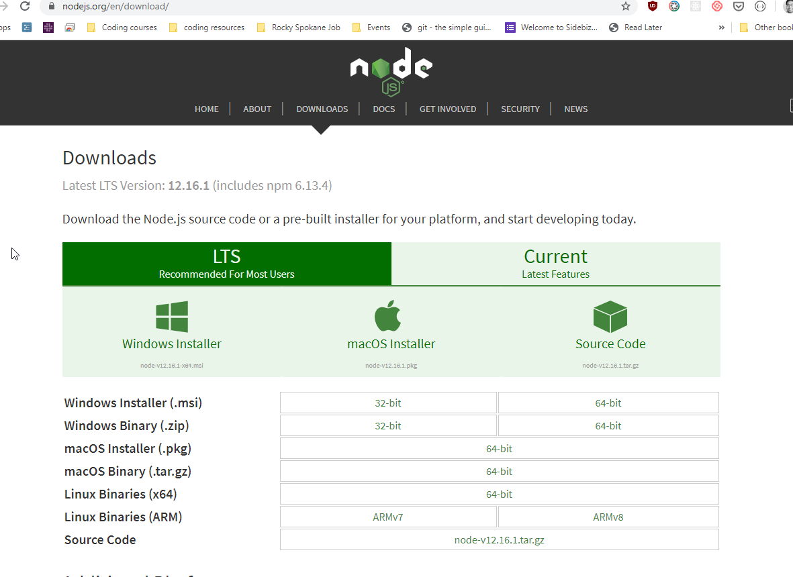
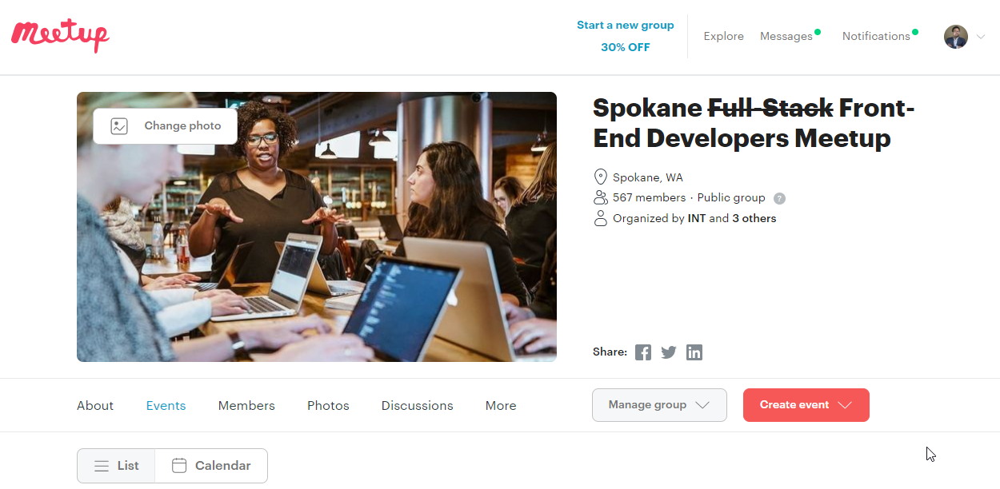
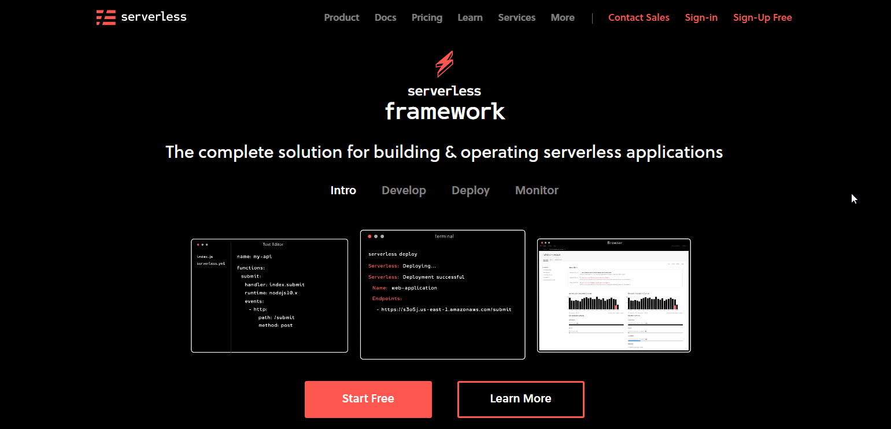

Getting Comfortable with Serverless
March 2020 Presentation

If you want to follow along....

If you want to follow along....
Always looking for speakers/vteers
Put this on your tinder profile.

How I present
tl;dr 🍕: What are we covering?
- What is Serverless 🌩️
- Before serverless 😭
- AWS and Lambda λ
- Web development (Github, Netlify, AWS and Heroku)
Serverless computing is a cloud-computing execution model in which the cloud provider runs the server, and dynamically manages the allocation of machine resources. Pricing is based on the actual amount of resources consumed by an application, rather than on pre-purchased units of capacity.
Shamelessly stolen from https://en.wikipedia.org/wiki/Serverless_computing
tl:dr: Normally, you create a server (PHP, Nodejs, Ruby or Python) which interact with a database to fetch information and send it to the Frontend. Then you host this backend server on hosting providers like GoDaddy, AWS or Azure that's running 24 x 7 (even if nobody is using it).
You pay for idle time. You also patch bugs, update software, and scale/manage.
With serverless, you write code and upload it to a serverless provider platform ( like AWS Lambda, for example). Your code runs when an event triggers it. The provider creates the environment for you when you need it and then tears it down when you don’t. Therefore, serverless doesn’t really mean no servers; it simply means that you don’t need to worry about them yourself.
Shamelessly stolen from https://stackify.com/aws-lambda-serverless/
This isn't the half-life symbol.

Actual representation of AWS Lambda.
Serverless: Backend devs vs Frontend devs.
Backend devs...

Serverless for Backends read this pros/cons.
Frontend devs
who wants to focus on deploying apps/websites...
“Focus on your application, not the infrastructure”.
~Faizan Bashir (https://hackernoon.com/what-is-serverless-architecture-what-are-its-pros-and-cons-cc4b804022e9)

What's "Lambda" and what are the usecases of serverless? (Explain like I'm 5) 🤷♂️
Again, not the half-life symbol.
Via Syntax Podcast
Slack Bot

Slack Bot Blueprint


Resize Images how-to


But 🗿🔑 I build websites, not apis.
So tell me about serverless for front-end?

Source: https://www.gocd.org/2017/06/26/serverless-architecture-continuous-delivery/
Hypothetical: Setting up a website 2000s-2020s style
2000's ish: Setting up your server with your computer

While your computer is a webserver, you try to 🎮 and performance becomes 📉.
2000's ish: MORE COMMITMENT.

- Time: Who loves updating?
- Hardware: Potential failures. Power outage.
- Security: Not just viruses, but break-ins.
Stage 3: Put it in the cloud!




Github Pages
Netlify
Okay hopefully you managed to set up AWS.
serverless.css-tricks.com
Lambda (and S3).
Lambda (and S3).

SERVERLESS.COM's Serverless Components Framework (waaay more complicated)
 repoDeploying it in production
- You can separate deploys to dev💻 or prod🌎
- Domain names/SLL with Route 53🚸
- Set up distribution with CloudFront
- Set up cache-busting in CloudFront
Last words:
In the words of Youtuber Fireship:
Always bet on Javascript.